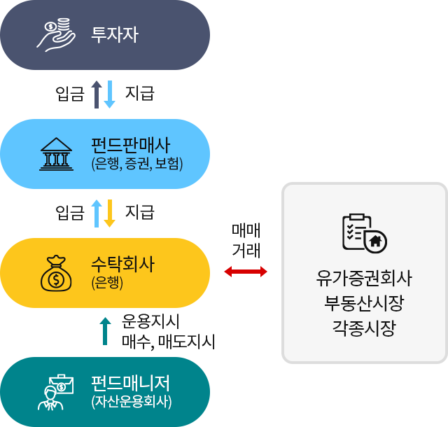

펀드의 운영구조
펀드란
여러 사람이 모아놓은 일종의 기금
이라고 할 수 있습니다.
보통 자산운용회사라는 곳에서 여러 사람들로부터 돈을 모아 기금을 만듭니다. 자산운용회사는 또 투자의 전문가인 펀드매니저를 채용해 이 돈으로 주식이나 채권 등에 투자 합니다. 이렇게 투자해서 얻은 이익을 다시 돈을 낸 사람들에게 되돌려주는 것이 바로 펀드입니다.
결국 펀드에 가입한다는 것은 약간의 수수료를 내고 투자전문가를 고용하는 것과 같습니다. 펀드는 전문가인 펀드매니저가 사람들을 대신해서 투자한다고 해서 간접투자라고도 합니다.
이는 우리가 직접 주식이나 채권에 투자하는 직접투자와는 상반된 의미입니다. 비전문가가 직접 주식이나 채권을 골라 투자할 때 보다 정보나 경험 등이 많은 투자전문가에게 맡기는 것이 당연 위험부담이 적습니다.
직간접투자 비교
| 구분 | 직접투자 | 간접투자 |
|---|---|---|
| 투자방식 | 고객이 주식 및 채권에 증권사 등을 통해 직접 투자 | 전문가(펀드매니저)에게 일정 수수료를 내고 자신을 대신해 투자하도록 대행 |
| 수수료 | 간접투자에 비해 낮음 | 직접투자에 비해 높음 |
| 수수료 구성 | 주식 및 채권관련 수수료 | 자산운용사, 판매사, 수탁회사에 일정수수료 제공 |
| 전문지식 | 정보 및 경험이 적음 | 정보 및 경험이 많음 |
| 위험부담 | 높음 | 직접투자에 비해 낮음 |
| 운용규모 | 규모가 작음 | 규모가 큼 |
| 수익기대 | 수익추구 | 안정추구 (일부 펀드상품의 경우 수익추구형 상품 다수 존재) |
펀드의 구조
펀드가 운용되는 데는 투자를 담당하는 자산운용회사, 펀드를 판매하는 판매회사, 펀드의 자금을 보관하는 수탁회사, 투자자 등이 있습니다.

주요구성기관의 업무내용
| 구분 | 업무내용 | 비고 |
|---|---|---|
| 자산운용회사 |
|
|
| 판매사 |
|
우체국펀드 |
| 수탁회사 |
|
우체국뱅킹 |